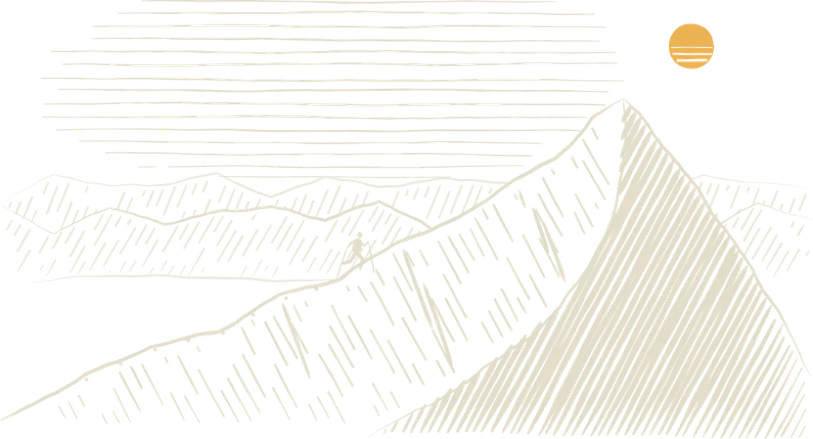
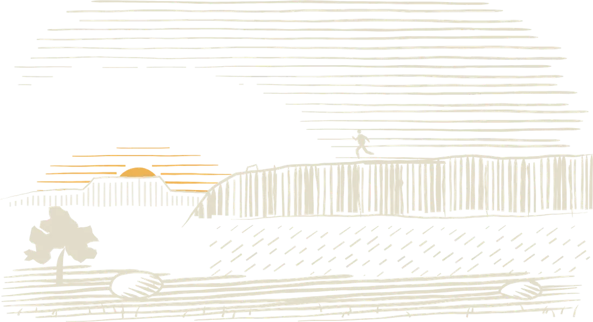
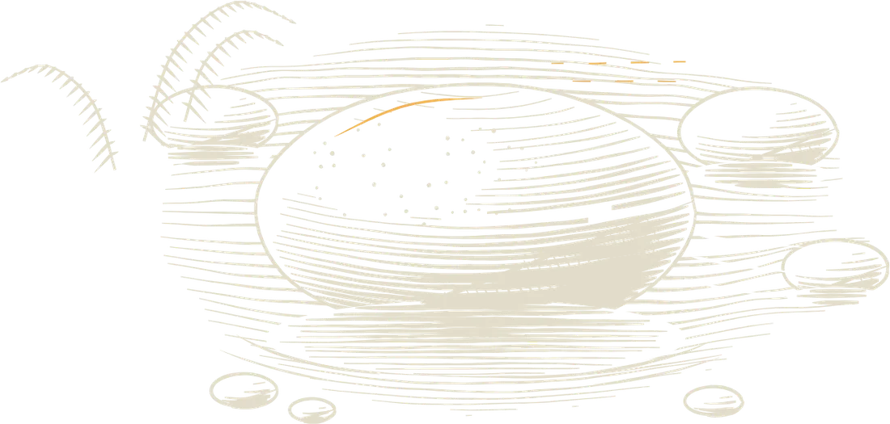
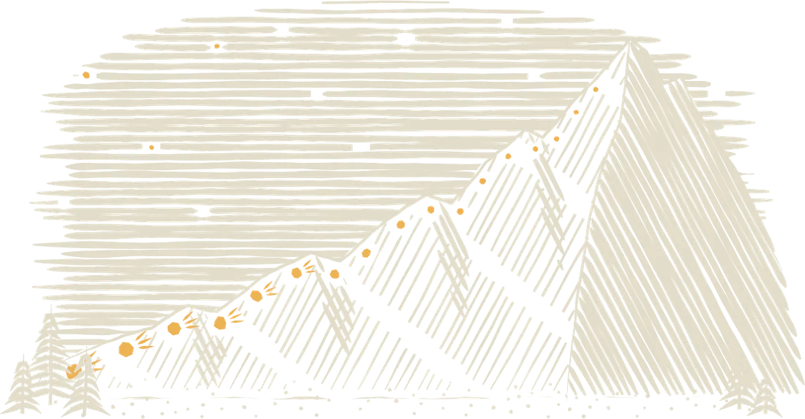
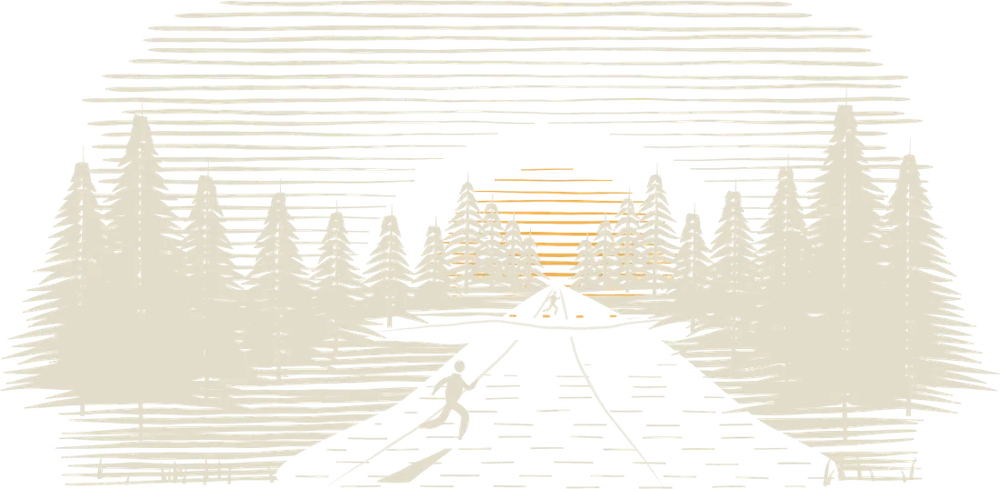
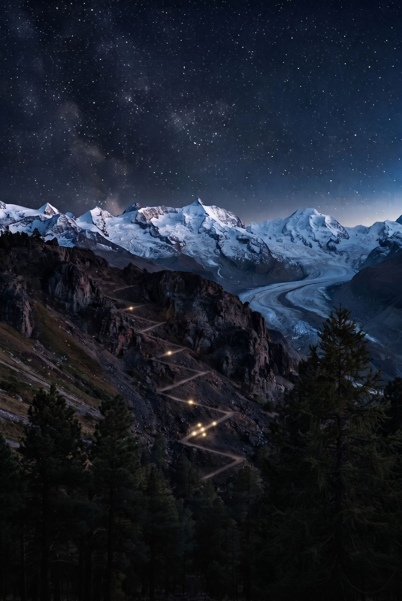

The stone is in your hand

Stone Breath · Book one of The Ancestral Watch
The Walk Home
Who will carry the fire when you cannot?Masan's question, from Stone Breath by Tony Skrelūnas
This is the book as a walk in the dark. Your finger is the headlamp. One stone, one breath, one long night, and the people who walk you home.
A few minutes. The sound is a quiet wind and a few spoken lines from the book. The button at the top turns it off.

Big Mountain · before the sun
Hold this.
Tonas was raised by his great-grandmother Masan. Her father ran with a stone. She put it in the boy's hand.
My father ran with a stone in his hand, imagining it on his tongue. Not a big one. Small. Smooth. The kind the river leaves on its banks for free. … He gave it to me. I give it to you. That is how this works.Masan, in Stone Breath
Find the stone with your light. Press and hold until it is yours.

The start line · in the dark
Three rounds, with him.
Then he held the stone in his palm. Closed his eyes. Imagined it on his tongue. Three cycles of 4-4-6-4. His heart rate, already a little fast from anticipation, dropped to where he wanted it. His mind cleared.Stone Breath, The Headlamp in the Dark
In four. Hold four. Out six. Hold four. The stone stays in your hand. It never goes in your mouth. If you have no stone, Masan says a thumb is fine.
There. Your shoulders dropped, didn’t they. Your jaw unclenched. … Your body already knew this. It was just waiting for you to remember.Masan, in Stone Breath
Mile 55 to mile 70 · alone
The dark is holding three things.
Move your light across the ridge until you find them.
- Mile 55. Wolves, in the valley below. He did not try to stop the fear. Masan had been clear about this: Fear is a messenger. You do not kill the messenger.
- Mile 70. A memory of the hogan floor. Masan, on the ones whose work was to carry: “And how to arrive with the thing still whole. Anyone can leave with it. Arriving with it is the work.”
- On the ridge, he finally understood. They ran so I could run. He touched the stone in his pocket. It was warm.
Mile 77 · a meadow under stars
Take this.
A woman is sitting on a rock at the side of the trail, crying, ready to quit. He sits down beside her. He picks up a small stone from the trail and holds it out.
It started as a sharp piece of rock, maybe a cliff face up there. It fell. It tumbled down streams. It got rolled by glaciers. It banged against other rocks for thousands of years. All that friction, all that pressure, and now it’s smooth. Now it’s in your hand.Stone Breath, The Headlamp in the Dark
Rub the stone. Be the glacier. Keep going.
It didn’t break. It got polished.
“The stone isn’t a distraction. It’s proof. You’ve been through your own glaciers. You’re still here.”

You Austėja Lukas Rytis UgnėMile 95 · the gray before dawn
He was barely upright.
This is where he cannot go on alone. You are in the middle now. Take a step.
They weren’t angels. They were witnesses.
The headlamps held the circle. They walked him home. … It was just people. Ordinary people. Bakers and teachers and grandmothers.Stone Breath, The Headlamp in the Dark
The Headlamp Circle · your own mile 95
Name your five.
Write down the names of five people who would show up for you at mile 95 of the hardest thing you ever do. If you cannot name five, that is information. Start showing up for others first.The Headlamp Circle, from Stone Breath
First names only. They stay on this device and are never sent to us or to anyone. They are the same five that Heal the Healer keeps for you here.
Now the other way.
The circle is built by being someone else’s mile 95 before it is built around you. Who is in their dark hour right now?
When someone you love is in the dark hour … do not ask if they need anything. Just go. Carry water. Carry frybread. Carry silence. Carry your own headlamp.The Headlamp Circle, from Stone Breath

The finish · sunrise over the peaks
Gray. Then pink. Then gold. In that order, no matter what is happening to anyone.
He had been enough all along. He had just forgotten.
The headlamps were off. The circle had held. And he had found something he didn’t know he was looking for. Home. Not a place. A feeling. A knowing that he belonged, not because he earned it, but because he had finally stopped running from it.
The last page · Austėja, on the ridge before the sun
Thank you. It is good. You are good.
I have more than I asked for. I know it.
Give me the day. I will use it.What Austėja Knew, the close of Stone Breath

The long film
Stone Breath, told in 30 minutes.
This is a taste, 1 minute 24. The whole film is for members, with the practice every morning.
Keep walking, here on Peaks
The stone breath, over the creekThe book’s practice, counted for you. Five rounds.→ Your five at mile 95Heal the Healer keeps your circle, and a day of short guides for the ones who carry others.→ The free practiceWhat opens with a first name and an email in the Listening Room.→ The films from the booksA taste of each for everyone, and the whole films for members, right on the page.→The book itself lives on the free author site. Stone Breath, at Ancestral Watch · Read the opening free
The ancestors are already walking. Don’t let them find you asleep.